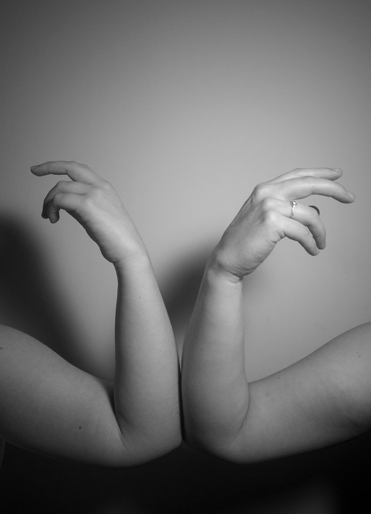

IF
Jamás he sido tan bueno para las palabras en conversaciones cotidianas, y para muchos es un defecto terrible puesto que, a menos que tenga una confianza considerable, no entablare una conversación muy extensa. Con el tiempo me he dado cuenta de que hay más formas de comunicarse que solo la voz, incluso mi disciplina a la que le he invertido tanto tiempo se basa en lo meramente tangible y visualmente interpretable.
No es necesario ser un diseñador para entender que nuestro mundo ya no es de palabras, sino que está hecho de imágenes, y no hablo de posters ni de vallas publicitarias, sino de nuestras manos mismas que a lo largo de nuestra historia han funcionado no solo como un elemento que nos da el conocimiento de las cosas o que nos defiende de los males que nos asechan, sino de la comunicación que nos pueden dar.
Nuestras manos cuentan historias, en sus gestos, en sus texturas, en sus colores y en muchos otros aspectos donde cada detalle cuenta algo de nosotros, demostrando que tan solo un fragmento de nuestro cuerpo, Alberga mucho de quienes somos y que la belleza de esa complejidad muda, nos enseña que no existe una regla que limite la forma en que damos un mensaje.
Incluso en estos tiempos llenos de incertidumbre donde el futuro de las relaciones humanas promete cambiar a largo plazo, Nos encontramos con nuevos hábitos, nuevas historias, nuevos gestos y algunos viejos que se han dotado de un significado más profundo.
